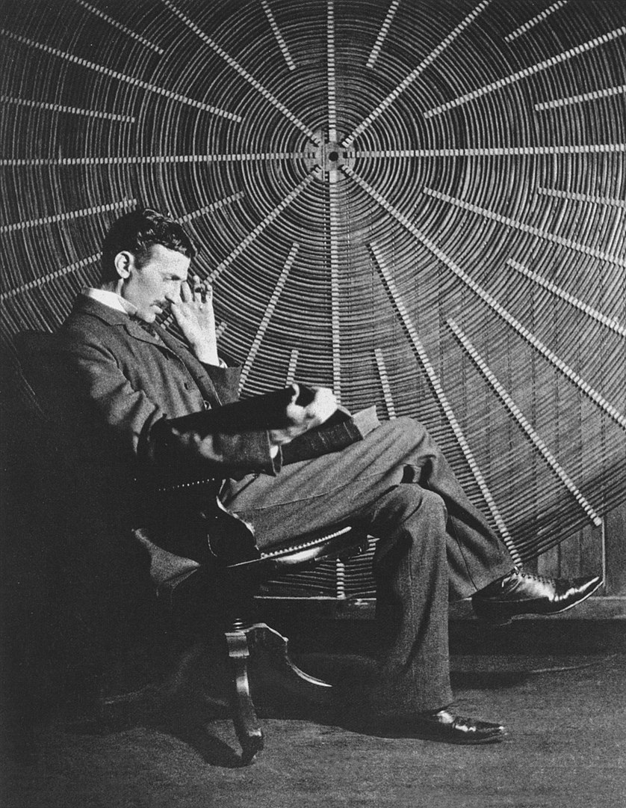
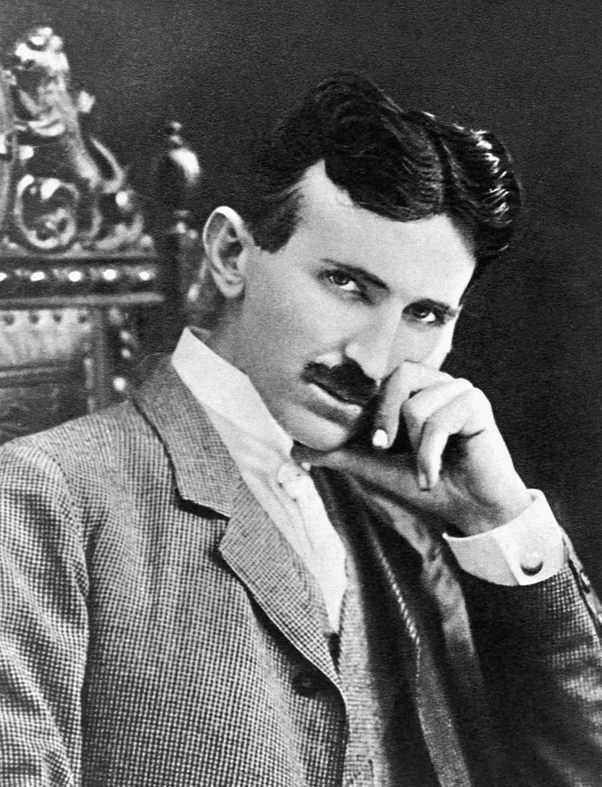

Tesla sitting in front of a spiral coil used in his wireless power experiments at his East Houston St. laboratory
Nikola Tesla (1856 - 1943) was a Serbian-American inventor, electrical engineer, mechanical engineer, and futurist best known for his contributions to the design of the modern alternating current (AC) electricity supply system.
Born and raised in the Austrian Empire, Tesla studied engineering and physics in the 1870s without receiving a degree, gaining practical experience in the early 1880s working in telephony and at Continental Edison in the new electric power industry. In 1884 he emigrated to the United States, where he became a naturalized citizen. He worked for a short time at the Edison Machine Works in New York City before he struck out on his own. With the help of partners to finance and market his ideas, Tesla set up laboratories and companies in New York to develop a range of electrical and mechanical devices. His alternating current (AC) induction motor and related polyphase AC patents, licensed by Westinghouse Electric in 1888, earned him a considerable amount of money and became the cornerstone of the polyphase system which that company eventually marketed.

Attempting to develop inventions he could patent and market, Tesla conducted a range of experiments with mechanical oscillators/generators, electrical discharge tubes, and early X-ray imaging. He also built a wireless-controlled boat, one of the first-ever exhibited. Tesla became well known as an inventor and demonstrated his achievements to celebrities and wealthy patrons at his lab, and was noted for his showmanship at public lectures. Throughout the 1890s, Tesla pursued his ideas for wireless lighting and worldwide wireless electric power distribution in his high-voltage, high-frequency power experiments in New York and Colorado Springs. In 1893, he made pronouncements on the possibility of wireless communication with his devices. Tesla tried to put these ideas to practical use in his unfinished Wardenclyffe Tower project, an intercontinental wireless communication and power transmitter, but ran out of funding before he could complete it.
After Wardenclyffe, Tesla experimented with a series of inventions in the 1910s and 1920s with varying degrees of success. Having spent most of his money, Tesla lived in a series of New York hotels, leaving behind unpaid bills. He died in New York City in January 1943. Tesla's work fell into relative obscurity following his death, until 1960, when the General Conference on Weights and Measures named the SI unit of magnetic flux density the tesla in his honor. There has been a resurgence in popular interest in Tesla since the 1990s.